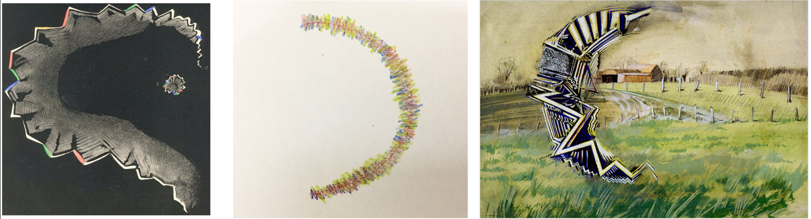

This is the online supplement for my poster in the APPM recruitment poster presentation.
Please note that most of content on this site are my personal research notes and are not necessarily intended to be public facing.
This page is of course an exception. I will however link to other pages for anyone interested in the details.
Consider those pages to be scratchwork that I don't mind sharing.
Heading 1
Lorem

Fig 1.
Examples of artistic renderings of scotomas. (Left) Physician and migraine
sufferer Hubert Airy's drawings of scotomas from his own experience (1870). He was the
first to propose they provide a clue to the underlying neuro-mechanistic process of the
pathology~\cite{AIRY1870}. (Middle) Drawing by young migraine patient, Brooke,
of a scintillating scotoma she experienced during migraine: provided by pediatric ophthalmologist
Matt Weed, Spokane (2017). (Right) Painting by an anonymous migraine patient,
photographed by British Migraine Association (2008).